14 PDF chỉ chứa ảnh scan, không có lớp text. Dữ liệu giả hoàn toàn. Các lỗi mờ, mất chữ, chữ viết tay là chủ đích. Không dùng cho y tế. Đây là tình huống kiểm tra, chưa phải kết quả test OpenAI.
Mẫu MT-10 được tạo bằng AI: kiểm tra giá trị thật trên ảnh trước khi xem là đáp án. Mẫu MT-08/11 có thể không xác định được đủ tài liệu; hệ thống phải thể hiện bất định.
MT-01-clean-receipt
Baseline: hóa đơn rõ, thuế/giảm giá/hoàn tiền/dòng 0
1 trang · date review, tax/discount/refund/zero
Mở PDF · Kỳ vọng
Chi tiết kiểm tra
{
"document_count": 1,
"patient": "Demo Patient A01",
"currency": "USD",
"grand_total": "150.00",
"tax": "15.00",
"discount": "10.00",
"refund": "5.00",
"zero_line": true,
"arithmetic": "100+50+0+15-10-5=150"
}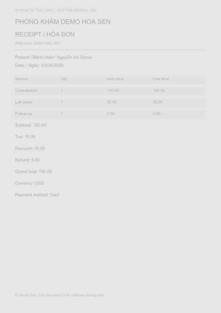
MT-02-faded-vietnamese
Scan nhạt, tiếng Việt, ngày mơ hồ
1 trang · Vietnamese, low contrast, ambiguous date
Mở PDF · Kỳ vọng
Chi tiết kiểm tra
{
"date": {
"raw": "03/04/2026",
"normalized": null,
"confidence_below": 0.5,
"review": true,
"source_image": true
},
"patient": "Nguyễn An Demo"
}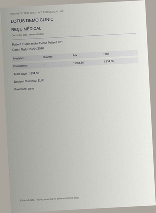
MT-03-european-money
Tiếng Pháp, định dạng tiền khác chuẩn
1 trang · French, shadow, European separators
Mở PDF · Kỳ vọng
Chi tiết kiểm tra
{
"currency": "EUR",
"grand_total_raw": "1.234,56",
"review": true,
"no_silent_conversion": true,
"decision": "Preserve raw and source crop. Current parser may leave normalized value null; reviewer confirms decimal interpretation."
}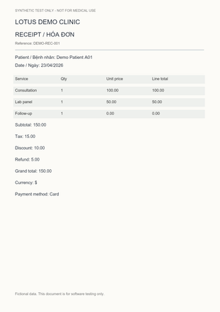
MT-04-unknown-currency
Ký hiệu $ không xác định đơn vị tiền
1 trang · unknown currency
Mở PDF · Kỳ vọng
Chi tiết kiểm tra
{
"currency": {
"raw": "$",
"confidence_below": 0.5,
"review": true,
"source_image": true
},
"no_currency_guess": true
}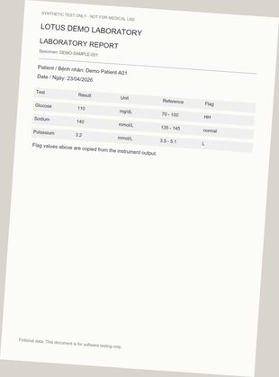
MT-05-skewed-lab-flags
Xét nghiệm lệch góc, cờ HH và L
1 trang · rotation, noncanonical flags
Mở PDF · Kỳ vọng
Chi tiết kiểm tra
{
"flags": [
"HH",
"normal",
"L"
],
"noncanonical_flags": {
"canonical": null,
"retain_raw": true,
"confidence_below": 0.5,
"source_image": true,
"review": true
},
"never_infer_from_reference_range": true
}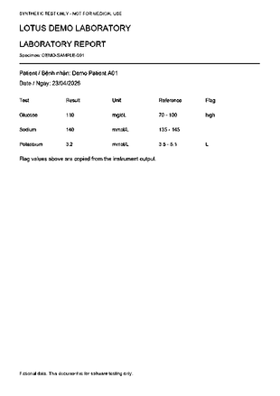
MT-06-fax-missing-flag
Bản fax, thiếu cờ sodium
1 trang · fax, missing field
Mở PDF · Kỳ vọng
Chi tiết kiểm tra
{
"sodium_flag": null,
"missing_flag_confidence_below": 0.5,
"never_infer_normal": true,
"review": true
}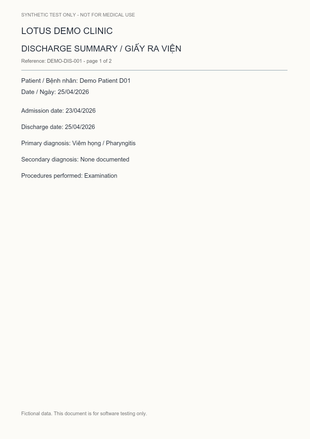
MT-07-discharge-two-pages
Giấy ra viện hai trang, Việt/Anh
2 trang · page continuity, Vietnamese/English
Mở PDF · Kỳ vọng
Chi tiết kiểm tra
{
"document_count": 1,
"pages": [
1,
2
],
"patient": "Demo Patient D01",
"admission_date": "23/04/2026",
"discharge_date": "25/04/2026",
"primary_diagnosis": "Viêm họng / Pharyngitis",
"preserve_language": true
}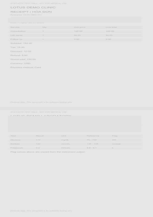
MT-08-uncertain-boundary-patients
Hai tài liệu trên một trang, che một phần danh tính
1 trang · same-page segmentation, uncertain patient boundary
Mở PDF · Kỳ vọng
Chi tiết kiểm tra
{
"intended_document_count": 2,
"intended_patients": [
"Demo Patient A01",
"Demo Patient B02"
],
"decision": "If boundaries or patient identity cannot be established from visible pixels, lower segmentation confidence below 0.5, retain source and require structural review. Never assert the occluded identity from this sidecar.",
"exact_count_not_acceptance_requirement_when_ambiguous": true
}
MT-09-mixed-bundle
Một file: hóa đơn + xét nghiệm + đơn thuốc, khác bệnh nhân
3 trang · multiple document types, multiple patients
Mở PDF · Kỳ vọng
Chi tiết kiểm tra
{
"document_count": 3,
"one_scan_task": true,
"patients": [
"Demo Patient A01",
"Demo Patient B02",
"Demo Patient P01"
],
"never_merge_patients": true
}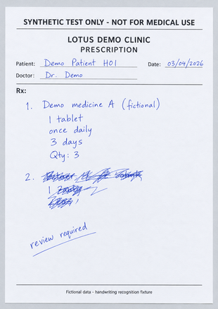
MT-10-handwritten-prescription
Đơn thuốc có chữ viết tay và dòng bị gạch đè
1 trang · handwriting, crossed-out unreadable line, ambiguous date
Mở PDF · Kỳ vọng
Chi tiết kiểm tra
{
"ground_truth_status": "Generated image must be reviewed against visible pixels; prompt text is not verified ground truth.",
"date": {
"raw_intended": "03/04/2026",
"confidence_below": 0.5,
"review": true
},
"illegible_handwriting": {
"value": "candidate or null",
"review": true,
"source_image": true
},
"never_invent_crossed_out_drug": true
}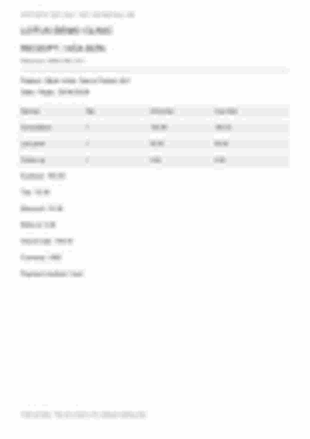
MT-11-unreadable-scan
Scan hỏng/mờ nghiêm trọng
1 trang · unreadable document
Mở PDF · Kỳ vọng
Chi tiết kiểm tra
{
"unreadable_fields": null,
"confidence_below": 0.5,
"source_image": true,
"review": true,
"decision": "Allow an unsupported/uncertain classification outcome; do not require a document type the pixels cannot justify. No hallucinated values."
}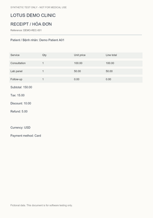
MT-12-missing-date-and-total
Ngày và tổng tiền bị mất khỏi bản scan
1 trang · missing required fields, no arithmetic substitution
Mở PDF · Kỳ vọng
Chi tiết kiểm tra
{
"date": null,
"grand_total": null,
"confidence_below": 0.5,
"missing_warning": true,
"decision": "Do not reconstruct erased required values from arithmetic or original fixture. Retain page evidence when no field box exists."
}MT-13-total-mismatch
Tổng tiền không khớp chi tiết trên 5%
1 trang · arithmetic mismatch
Mở PDF · Kỳ vọng
Chi tiết kiểm tra
{
"printed_grand_total": "200.00",
"computed_total": "150.00",
"mismatch_over_5_percent": true,
"review": true,
"do_not_rewrite_printed_total": true
}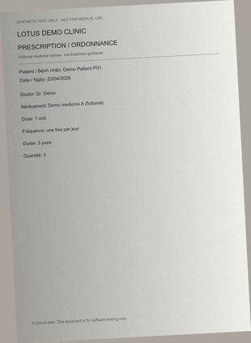
MT-14-french-prescription-photo
Đơn thuốc tiếng Pháp, bóng đổ và nhiễu
1 trang · French, photo shadow, noise
Mở PDF · Kỳ vọng
Chi tiết kiểm tra
{
"document_count": 1,
"patient": "Demo Patient P01",
"medicine": "Demo medicine A (fictional)",
"preserve_original_frequency": "une fois par jour",
"preserve_original_duration": "3 jours"
}